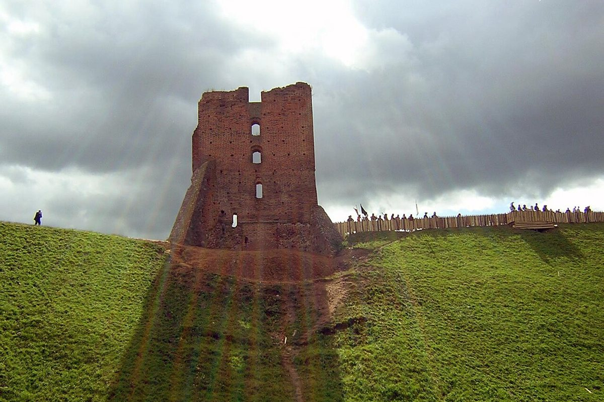
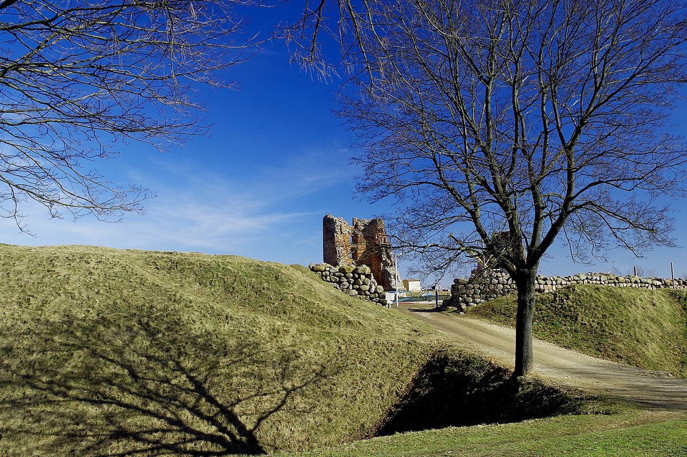

The ruins of a medieval castle on Castle Hill — one of the most powerful castles in Belarus in the 16th century.
Novogrudok Castle is a monument of medieval defensive architecture. It is located on Castle Hill, about 20 metres high.
In the second half of the 13th century a stone tower was built here; in the late 14th century it was rebuilt in brick. It became known as Shchitovka. In the 16th century the castle had seven towers and was one of the most powerful in Belarus.
The wars of the 17th century and the Great Northern War destroyed the fortifications. In 1906 the Church Tower collapsed. In the 1920s–1930s the surviving ruins were conserved.
Today it is an open-air museum and one of the main sights of Novogrudok. Castle Hill offers a panorama of the town.

